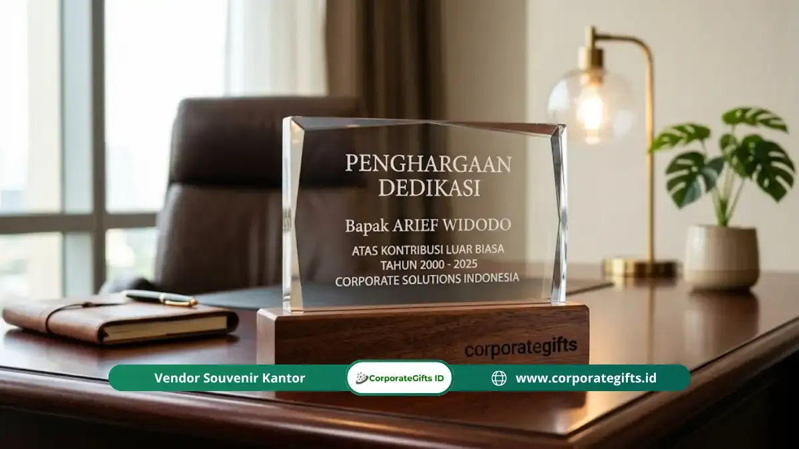

Corporate Gifts ID - Ide terbaik souvenir perpisahan kantor perorangan adalah plakat ukir nama, jam meja custom, hamper premium personal, buku kenangan tim, dan aksesori profesional premium. Kelimanya dipersonalisasi dengan nama, jabatan, periode kerja, atau pesan dari tim, sehingga menjadi kenang-kenangan yang hanya bermakna bagi satu penerima. Pilih jenisnya berdasarkan jabatan, lama pengabdian, dan selera orang yang berpamitan.
Poin Kunci Souvenir Perpisahan Kantor Perorangan:
- Personalisasi Mendalam: Berfokus pada satu penerima dengan penyematan nama lengkap, jabatan, dan rentang periode pengabdian.
- 5 Pilihan Terbaik: Plakat ukiran kayu/akrilik, jam meja eksklusif, hamper kurasi hobi, buku kenangan tim, dan aksesori kerja kulit asli.
- Nilai Emosional Utama: Kehangatan pesan dan ketulusan tim jauh lebih bernilai bagi penerima daripada sekadar nominal harga produk.
- Waktu Produksi 5-10 Hari: Proses grafir nama atau penjilidan custom membutuhkan waktu pengerjaan khusus, ideal dipesan 2-3 minggu sebelum seremoni.
- Segmentasi Tepat Sasaran: Menyesuaikan cinderamata dengan alasan perpisahan (pensiun purna tugas, resign karier baru, mutasi cabang, atau promosi).
Apa Itu Souvenir Perpisahan Kantor Perorangan?
Souvenir perpisahan kantor perorangan adalah cinderamata eksklusif yang dirancang khusus untuk satu individu yang berpamitan dari organisasi, baik karena memasuki masa purna tugas (pensiun), mengajukan pengunduran diri (resign) untuk babak karier baru, rotasi promosi, maupun mutasi tugas ke luar kota.
Berbeda mendasar dengan cinderamata massal yang diproduksi seragam dalam jumlah ratusan unit, souvenir perorangan memiliki tiga karakteristik istimewa:
- Kedalaman Personalisasi: Identitas penerima seperti nama lengkap dengan gelar, jabatan terakhir, serta masa bakti diukir presisi pada produk.
- Bobot Emosional Tinggi: Menjadi simbol penghormatan atas jejak kontribusi, keringat, dan dedikasi yang telah diukir selama bertahun-tahun.
- Konteks Penyerahan Sakral: Biasanya diserahkan langsung oleh dewan direksi atau rekan satu divisi dalam sesi seremoni formal perpisahan.
5 Ide Souvenir Perpisahan Perorangan Paling Berkesan
Memilih cinderamata untuk satu orang membutuhkan kejelian melihat karakter dan preferensi personal penerima. Berikut lima rekomendasi pilihan terbaik:
1. Plakat Penghargaan Ukir Nama
Plakat adalah simbol apresiasi formal yang paling abadi di dunia korporat. Menggunakan material kayu walnut, mahoni solid, atau kristal optik dengan pelat kuningan grafir laser, plakat memuat nama lengkap, logo perusahaan, serta kalimat terima kasih mendalam atas loyalitasnya.
2. Jam Meja atau Jam Dinding Eksklusif
Jam melambangkan perjalanan waktu dan setiap detik berharga yang dihabiskan bersama di kantor. Jam meja kayu berornamen ukiran kuningan atau jam dinding minimalis dengan grafir dedikasi tim akan menjadi pajangan permanen yang membanggakan di ruang kerja baru atau kediaman pribadi.
3. Hamper Premium Personal Sesuai Hobi
Bagi rekan kerja yang memiliki ketertarikan khusus, paket hampers tematik adalah bentuk perhatian yang sangat menyentuh hati. Misalnya, set peralatan seduh kopi manual (manual brew) untuk pecinta kopi, set teh herbal artisanal berpadu cangkir keramik, atau set perlengkapan golf eksklusif.

Gift set hampers premium perpisahan kantor dengan kemasan hardbox elegan dan ukiran dedikasi kerja.
4. Buku Kenangan Tim (Memory Book)
Buku kenangan adalah hadiah yang tidak dapat dibeli dengan uang di toko mana pun. Kumpulkan foto dokumentasi momen kebersamaan di kantor, anekdot lucu, serta pesan tulisan tangan dari setiap anggota divisi yang dijilid dalam format buku hardcover mewah berbalut kain linen atau kulit sintetis.
5. Aksesori Profesional Kulit Premium
Produk fungsional berbahan kulit sapi asli (genuine leather) seperti tas kerja laptop, dompet kartu eksekutif, atau cover binder agenda dengan deboss inisial nama adalah cinderamata elegan yang akan mendukung performa kerja penerima di tempat baru.
Panduan Memilih Hadiah Sesuai Alasan Perpisahan
Konteks alasan perpisahan menjadi kompas penentu jenis cinderamata yang paling tepat:
- Karyawan Memasuki Masa Pensiun: Utamakan plakat penghargaan resmi, jam meja kayu elegan, atau cenderamata kehormatan yang bersifat monumental untuk menandai puncak karier pengabdian.
- Rekan Kerja Resign (Babak Karier Baru): Berikan barang produktivitas elegan seperti tas kerja kulit, pena eksekutif berukir nama, atau buku kenangan foto divisi.
- Rekan Kerja Mutasi Luar Kota: Pilih hadiah yang praktis dibawa bepergian (travel-friendly) seperti tumbler termos custom berdaya tahan tinggi atau travel pouch kulit.
- Pimpinan, Mentor, atau Atasan Langsung: Hadiahkan kombinasi paket hampers VIP berisikan plakat kristal kehormatan dan kompilasi video kenangan dari seluruh bawahan.
Tabel Rekomendasi Souvenir Sesuai Segmentasi
Berikut rangkuman perbandingan ide souvenir perpisahan kantor perorangan:
| Segmentasi Penerima | Rekomendasi Cinderamata Utama | Tingkat Personalisasi | Estimasi Anggaran |
|---|---|---|---|
| Karyawan Pensiun / Senior Leader | Plakat kayu mahoni grafir emas & jam meja eksklusif | Nama lengkap, gelar, periode kerja & kutipan jasa | Rp500.000 - Rp1.500.000 |
| Rekan Resign (Karier Baru) | Dompet kulit emboss nama & binder agenda eksekutif | Inisial nama & kartu ucapan selamat berkarya | Rp200.000 - Rp450.000 |
| Rekan Mutasi Cabang / Kota | Hamper travel kit premium & tumbler tahan panas/dingin | Grafir nama & pesan selamat bertugas di pos baru | Rp250.000 - Rp600.000 |
| Mentor / Atasan Divisi | Buku kenangan foto tim jilid hard cover & plakat kristal | Tanda tangan digital seluruh staf & pesan apresiasi | Rp400.000 - Rp1.000.000 |
Cara Menambahkan Sentuhan Personal yang Menyentuh Hati
Kekuatan souvenir perorangan terletak pada ketulusan detail kecil yang disisipkan:
- Sematkan Nama Resmi Lengkap: Penggunaan nama lengkap beserta gelar akademik/profesi memberikan penghormatan formal yang membanggakan dibanding sekadar nama panggilan santai.
- Cantumkan Periode Pengabdian (Masa Bakti): Menuliskan tahun awal bergabung hingga tahun perpisahan (contoh: 2015 - 2026) merekam jejak sejarah kontribusi nyata.
- Kumpulkan Testimoni Spesifik: Kutip satu kontribusi terbaik yang pernah dilakukan penerima, misalnya: Terima kasih telah membimbing tim meraih target pertumbuhan 150% pada tahun 2024.
- Sentuhan Kemasan Hardbox Bernama: Bungkus hadiah di dalam boks magnetik eksklusif dengan pita satin dan kartu ucapan cetak emboss.
Berapa Anggaran yang Wajar untuk Souvenir Perorangan?
Besaran anggaran pengadaan cinderamata perorangan sangat fleksibel, menyesuaikan dengan kebijakan budget operasional perusahaan atau hasil inisiatif patungan sukarela anggota divisi:
- Rekan Kerja Selevel: Rentang Rp150.000 hingga Rp350.000 umumnya sudah mampu menghadirkan produk berkualitas seperti tumbler grafir nama atau dompet kulit custom.
- Manajer & Pejabat Purna Tugas: Rentang Rp500.000 hingga Rp1.500.000 dialokasikan untuk plakat kayu jati kombinasi logam kuningan atau paket hampers gift set VIP lengkap.
Pertanyaan Seputar Souvenir Perpisahan Kantor Perorangan (FAQ)
Kesimpulan: Rayakan Dedikasi dengan Cinderamata Bermakna
Souvenir perpisahan kantor perorangan yang sukses bukanlah dinilai semata dari label harga yang mahal, melainkan dari ketulusan pesan dan kedalaman personalisasi yang dihadirkan. Mengukir nama rekan kerja pada cenderamata eksklusif adalah pengakuan nyata bahwa perjalanan karier dan kontribusinya senantiasa dihargai dalam lembaran sejarah perusahaan.
Konsultasikan pembuatan cinderamata perpisahan perorangan Anda bersama Corporate Gifts ID. Kami siap membantu pembuatan plakat penghargaan custom, paket hampers eksklusif ber-box magnetik, dan grafir nama presisi tinggi untuk menyempurnakan seremoni perpisahan insan terbaik Anda.